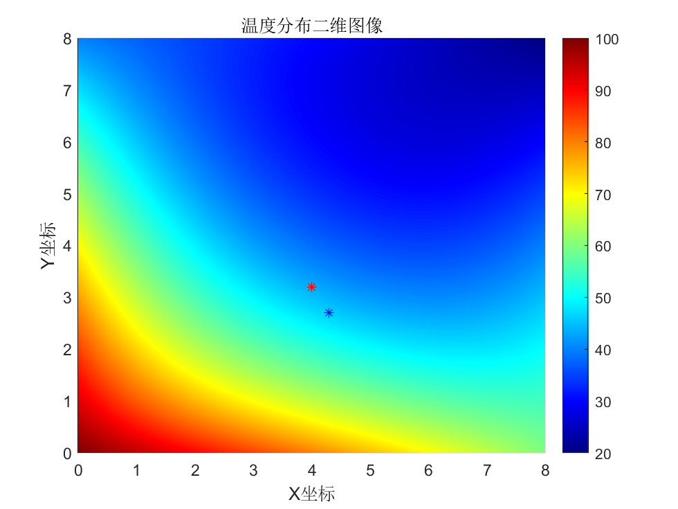

Matlab期末考试
Matlab选修作业记录（其他的简介懒得写了/2025-01-25/）
北邮Matlab选修 期末作业
题目 #1
问题描述
对于自由降落的伞兵，其阻力为线性函数，速度的解析表达式为：
$$v\left(t\right)=\frac{gm}{c}\left(1-e^{-\frac{c}{m}t}\right)$$
其中v(t)是速度$m/s$，t是时间$s$，$g=9.81m/s^2$，m是质量(kg)，c是线性阻力系数$kg/s$。使用数值积分算法计算跳伞员在自由落体最初的8秒内下降的高度。给定$m=80kg$，$c=10kg/s$
数学模型
对于给定的$v\left(t\right)$，在时间从$t_0$到$t_1$时行过的路程： $$x=\int_{t_0}^{t_1}v\left(t\right)dt$$
为了求自由落体最初的8秒内下降的高度，即求$\int_{0}^{8}v\left(t\right)dt$的数值。
程序设计
%question1.m
% 定义参数
g = 9.81; % 重力加速度，单位 m/s^2
m = 80; % 质量，单位 kg
c = 10; % 线性阻力系数，单位 kg/s
% 定义符号变量
syms t
% 速度函数
v = g*m/c * (1 - exp(-c/m*t));
% 定义时间向量，这里我们使用足够小的时间间隔来确保积分的准确性
t_span = 0:0.001:8; % 从0秒到8秒，步长为0.01秒
% 计算对应时间点的速度值
v_values = double(subs(v, t, t_span)); % 将符号表达式替换为数值，并转换为双精度浮点数
% 使用梯形法计算位移（即高度），初始高度设为0
% 注意：这里的高度实际上是相对于初始位置的位移，因此初始值设置为0
height_increase = trapz(t_span, v_values); % trapz函数计算的是增量，所以结果就是从0开始的位移
% 输出结果
fprintf('跳伞员在最初的8秒内下降的高度为:%.2f m\n', height_increase);
计算结果
>> question1
跳伞员在最初的8秒内下降的高度为:230.97 m
题目 #2
问题描述
在加热盘的不同点上测量温度如下表所示。估计下面各点的温度：（a）$x=4$，$y=3.2$；（b）$x=4.3$，$y=2.7$。
| $x=0$ | $x=2$ | $x=4$ | $x=6$ | $x=8$ | |
| $y=0$ | 100.00 | 90.00 | 80.00 | 70.00 | 60.00 |
| $y=2$ | 85.00 | 64.49 | 53.50 | 48.15 | 50.00 |
| $y=4$ | 70.00 | 48.90 | 38.43 | 35.03 | 40.00 |
| $y=6$ | 55.00 | 38.78 | 30.39 | 27.07 | 30.00 |
| $y=8$ | 40.00 | 35.00 | 30.00 | 25.00 | 20.00 |
数学模型
题目中给定了有限的温度取样点，要得知a和b点的温度，需要我们根据给定点的温度进行插值，如果采用线性插值，显然不符合事实， 这里我选择三次样条插值，使结果更加平滑。
程序设计
%question2.m
% 定义x和y的网格点
[x_grid, y_grid] = meshgrid(0:2:8, 0:2:8);
% 温度矩阵（索引从1开始，与x_grid和y_grid匹配）
T = [
100.00,90.00,80.00,70.00,60.00;
85.00,64.49,53.50,48.15,50.00;
70.00,48.90,38.43,35.03,40.00;
55.00,38.78,30.39,27.07,30.00;
40.00,35.00,30.00,25.00,20.00
];
% 创建一个更精细的网格用于绘图
[xq, yq] = meshgrid(0:0.01:8, 0:0.01:8);
% 使用线性插值估计温度
Tq_spline = interp2(x_grid, y_grid, T, xq, yq,"spline");
% 估计特定点的温度
point_a_x = 4;
point_a_y = 3.2;
point_b_x = 4.3;
point_b_y = 2.7;
% 使用interp2函数估计温度
temp_a = interp2(x_grid, y_grid, T, point_a_x, point_a_y, 'spline');
temp_b = interp2(x_grid, y_grid, T, point_b_x, point_b_y, 'spline');
% 显示估计的温度
fprintf('点(a)x=4, y=3.2 的温度估计为：%.2f°C\n', temp_a);
fprintf('点(b)x=4.3, y=2.7 的温度估计为：%.2f°C\n', temp_b);
% 绘制二维彩色网格图
pcolor(xq, yq, Tq_spline); % 使用pcolor绘制二维彩色网格图
shading interp; % 平滑颜色过渡
% 设置颜色映射
colormap('jet');
% 添加颜色条
colorbar;
% 添加坐标轴标签和标题
xlabel('X坐标');
ylabel('Y坐标');
title('温度分布二维图像');
% 可以在图上添加估计点的标记
hold on;
plot(point_a_x, point_a_y, 'r*-'); % 点（a）红色
plot(point_b_x, point_b_y, 'b*-'); % 点（b）绿色
hold off;
计算结果
>> question2
点(a)x=4, y=3.2 的温度估计为：43.45°C
点(b)x=4.3, y=2.7 的温度估计为：46.15°C

最后修改于 2024-08-05